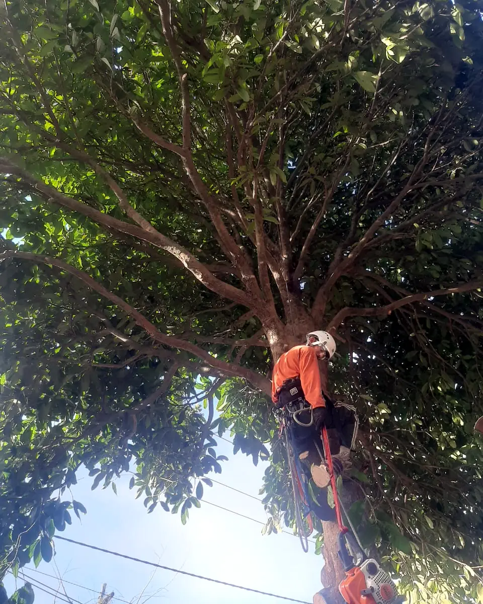
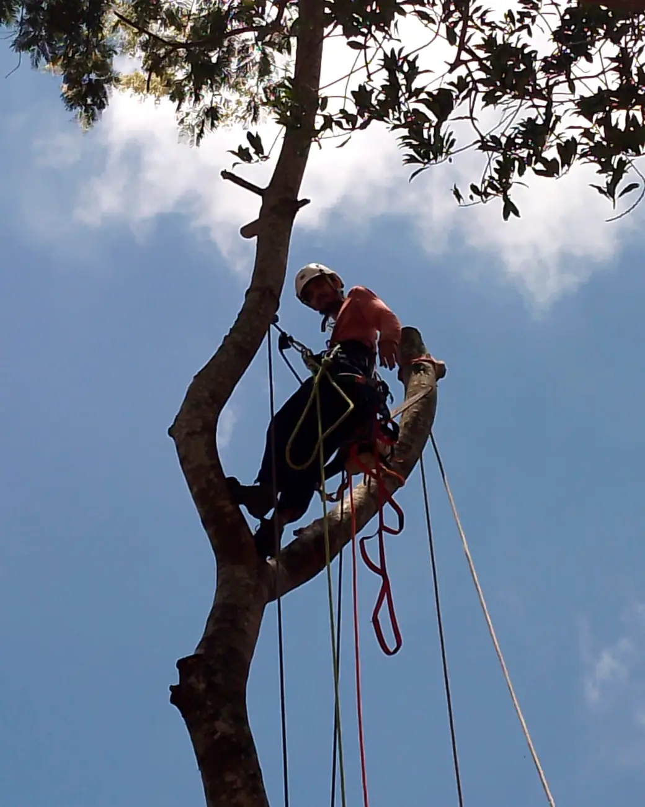
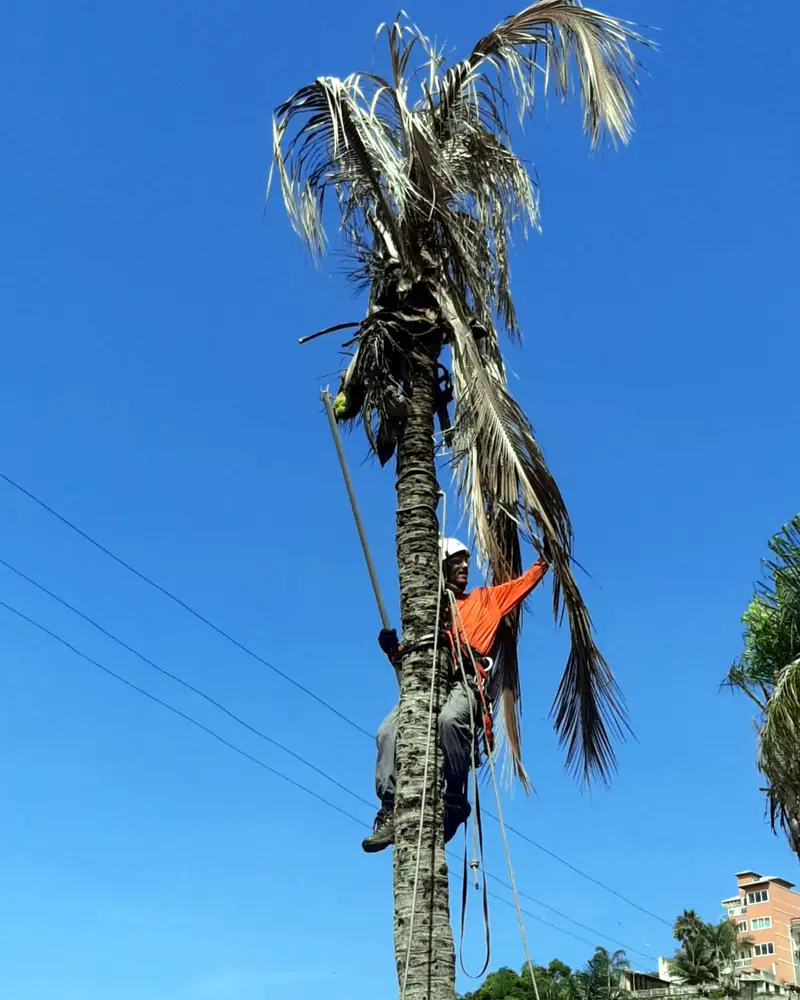
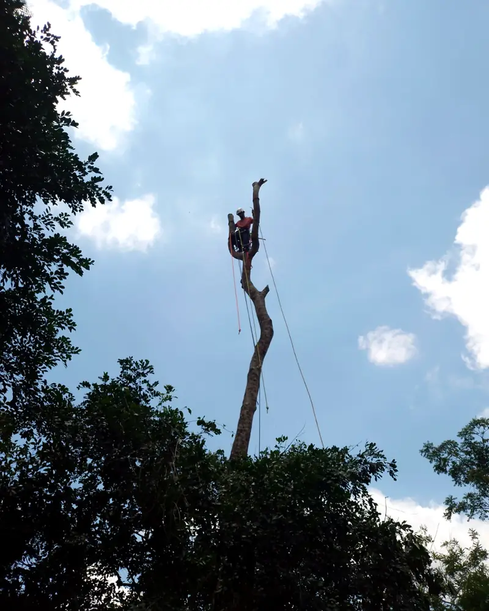
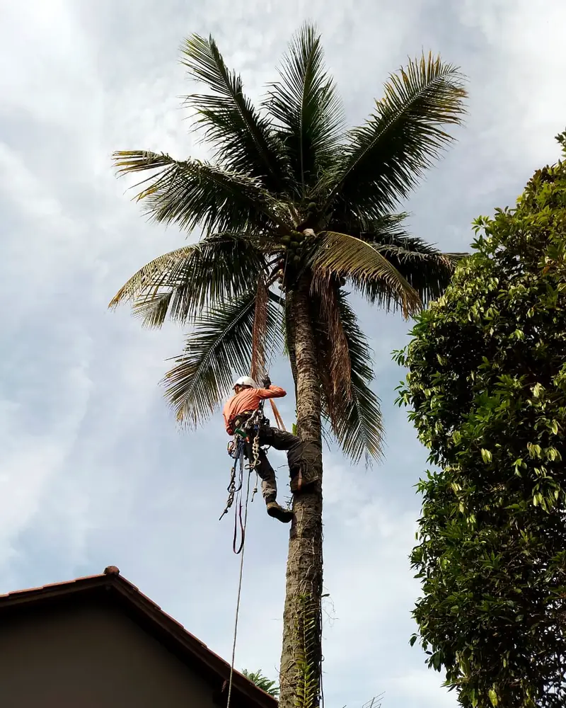
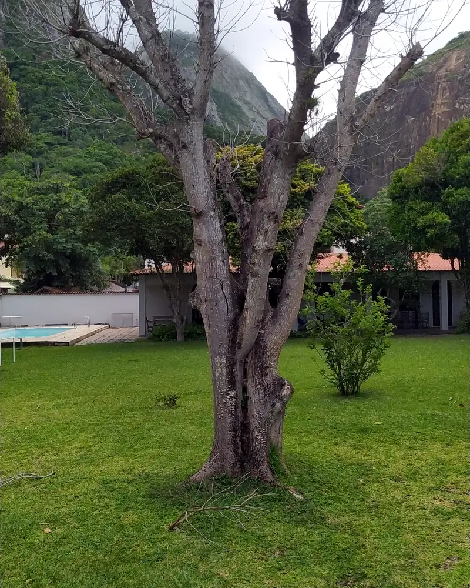
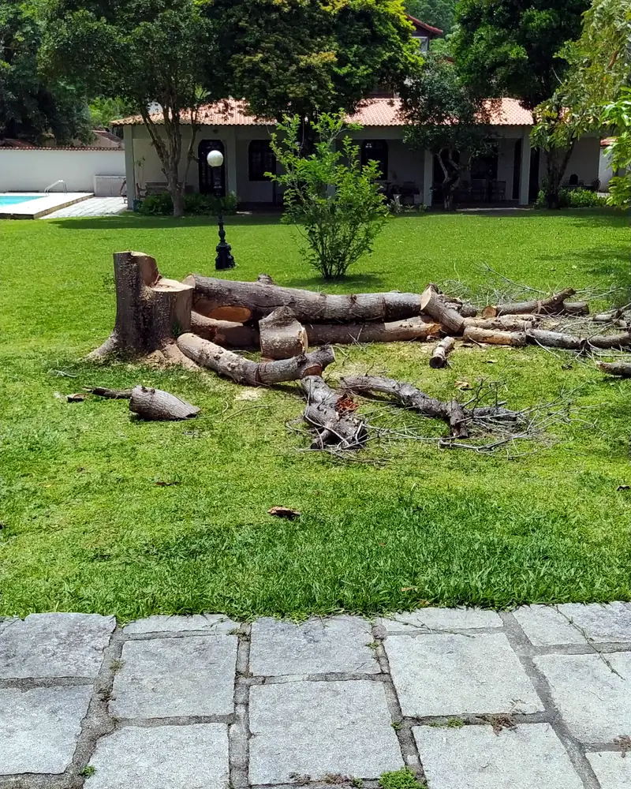
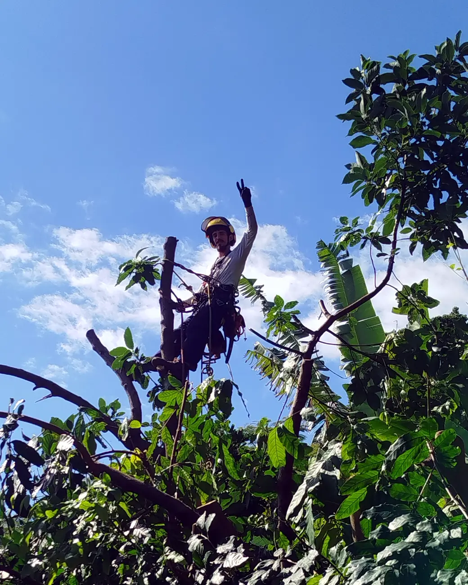

Arborismo profissional para cuidar das suas árvores com segurança e técnica
Serviços especializados de poda, manejo, tratamento e remoção de árvores e palmeiras para residências, sítios, condomínios e empresas em todo o Estado do Rio de Janeiro.
Avaliação gratuita em Niterói, São Gonçalo, Maricá e Rio de Janeiro. Para outras localidades, consulte as condições.
- Equipe capacitada
- Equipamentos próprios
- Atendimento em todo o RJ

- Poda preventiva
- Poda emergencial
- Tratamentos
- Remoção de árvores e palmeiras
Situações
Sua árvore precisa de atenção?
Nem sempre é fácil saber quando uma árvore precisa de intervenção. Alguns sinais e situações indicam que vale buscar uma avaliação profissional.
-
Galhos próximos de telhados, muros ou áreas de circulação
Quando a árvore começa a interferir no espaço ao redor, é importante avaliar o que pode ser feito.
-
Galhos secos, quebrados ou comprometidos
Alterações visíveis na estrutura da árvore merecem atenção e avaliação adequada.
-
Mudanças na aparência ou no desenvolvimento da árvore
Folhas, galhos, tronco ou copa podem apresentar sinais que justificam uma análise mais cuidadosa.
-
Situações após chuva ou vento forte
Eventos climáticos podem causar quebras, deslocamentos ou outras condições que exigem atenção mais rápida.
Não sabe exatamente o que está acontecendo? Envie fotos e conte a situação. A Curi avalia o caso e orienta os próximos passos.
Serviços
Serviços para cuidar de árvores e palmeiras
Cada árvore e cada local exigem uma avaliação própria. A Curi Arborismo atua com diferentes tipos de poda, manejo, tratamento e remoção, de acordo com a necessidade identificada no local.
-
Poda preventiva
Indicada para manutenção planejada e condução adequada da árvore antes que surjam situações mais críticas.
-
Poda de limpeza
Remoção de galhos secos, comprometidos ou que demandem intervenção após avaliação técnica.
-
Levantamento de copa
Intervenção na parte inferior da copa para melhorar a relação da árvore com áreas de circulação, construções ou outros elementos do entorno.
-
Rebaixamento de copa
Redução controlada da altura da copa, quando tecnicamente indicada e viável para a condição da árvore.
-
Poda de correção
Intervenções direcionadas à estrutura da copa para corrigir crescimento inadequado, conflitos ou necessidades específicas de manejo.
-
Poda emergencial
Atendimento para situações que exigem intervenção prioritária, conforme disponibilidade da equipe.
-
Tratamento fitossanitário
Avaliação e tratamento de problemas que podem afetar a saúde de árvores e palmeiras.
-
Limpeza de palmeiras
Retirada de folhas secas, bainhas e outros materiais, conforme a necessidade de cada palmeira.
-
Remoção de árvores e palmeiras
Serviço realizado após avaliação das condições do local, viabilidade técnica e autorizações aplicáveis.
-
Gestão dos resíduos do serviço
Normalmente, a equipe da Curi organiza a retirada do material com caçamba ou caminhão, com o custo dessa gestão incluído no orçamento. Se o cliente preferir cuidar da destinação, o material pode ser apenas cortado e organizado no local.

5 anos de experiência direta em arboricultura
Lucas Curi atua diretamente com arboricultura há 5 anos, com experiência em diferentes cenários de poda, manejo e trabalho em altura.
Arborismo profissional
Arborismo exige técnica, preparo e responsabilidade
Trabalhar com árvores, especialmente em áreas urbanas, exige muito mais do que executar um corte. É preciso avaliar o ambiente, entender a estrutura da árvore e utilizar técnicas e equipamentos adequados para cada situação.
-
Capacitação para trabalho em altura e arboricultura
Cursos de NR 12 e NR 35 com foco em arboricultura e escalada em árvore.
-
Manejo orientado por norma técnica
Podas e manejos realizados conforme a ABNT NBR 16246-1.
-
Equipamentos adequados para cada operação
A equipe trabalha com equipamentos próprios e específicos para execução dos serviços de arborismo.
-
Atuação responsável
Cada serviço considera as condições da árvore, do local e as exigências aplicáveis à intervenção.
Trabalhos realizados
Trabalho de verdade, em situações reais
Veja alguns dos serviços realizados pela Curi Arborismo em árvores e palmeiras de diferentes portes e condições.




Antes
DepoisO que nossos clientes dizem
Bloco demonstrativo para aprovação do layout. Não aparece na versão pública até a conexão com as avaliações reais do Google.
-
Avaliação de exemplo
Texto de exemplo. Espaço reservado para o comentário de um cliente publicado no perfil da Curi Arborismo no Google.
-
Avaliação de exemplo
Texto de exemplo mais longo, para testar o cartão com comentários extensos. Na versão final, este espaço mostrará o relato de um cliente exatamente como foi publicado no Google, sem edição. A altura dos cartões se ajusta ao maior texto visível.
-
Avaliação de exemplo
Texto de exemplo. O comentário real substituirá este conteúdo quando as avaliações do Google forem conectadas.
-
Avaliação de exemplo
Texto de exemplo curto.
-
Avaliação de exemplo
Texto de exemplo. Este cartão serve para testar a navegação entre as avaliações e não representa a opinião de nenhum cliente.
Precisa de um serviço como esses? Envie algumas fotos e conte o que você precisa.
Quero avaliar meu caso (abre o WhatsApp)Como funciona
Do primeiro contato à execução do serviço
O atendimento começa de forma simples: você explica a situação, envia as informações iniciais e a Curi orienta os próximos passos.
-
Conte o que está acontecendo
Entre em contato e envie fotos, localização e uma breve descrição da necessidade.
-
Avaliação do caso
A Curi analisa as informações e, quando necessário, realiza uma visita técnica no local.
-
Orçamento
Com o serviço definido, você recebe o orçamento conforme as necessidades da operação.
-
Agendamento
Após a aprovação, o serviço é programado de acordo com a disponibilidade da equipe.
-
Execução
A equipe realiza o trabalho conforme o escopo combinado, incluindo a gestão dos resíduos quando prevista no orçamento.

Quem somos
Quem está por trás da Curi Arborismo
Da agrofloresta à arboricultura urbana.
A trajetória de Lucas Curi começou na agrofloresta, em um trabalho que envolvia contato constante com árvores e podas em altura. Com o tempo, Lucas tomou gosto por esse tipo de atividade e passou a se envolver cada vez mais com o manejo e o trabalho técnico em árvores.
Ao perceber a demanda por serviços especializados em áreas urbanas, aprofundou sua atuação na arboricultura e se especializou em técnicas e sistemas mais complexos, próprios para as particularidades das cidades.
Hoje, a Curi Arborismo une conhecimento técnico, cuidado com as árvores e responsabilidade em cada operação.
Área de atendimento
Atendimento em todo o Estado do Rio de Janeiro
A Curi Arborismo atende residências, incluindo sítios, condomínios e empresas em diferentes regiões do estado.
Avaliação para orçamento gratuita em
- Niterói
- São Gonçalo
- Maricá
- Rio de Janeiro
Para outras localidades, as condições da avaliação são consultadas conforme a distância e a necessidade do serviço. Quando houver custo de deslocamento para avaliação, esse valor poderá ser abatido do serviço contratado.
Informe sua localização e conte o que precisa para avaliarmos o atendimento.
Consultar atendimento na minha região (abre o WhatsApp)Perguntas frequentes
Ainda ficou com alguma dúvida?
Reunimos algumas das principais questões que costumam surgir antes de contratar um serviço de arborismo.
Preciso saber qual tipo de poda ou serviço contratar?
Não. Você pode apresentar sua necessidade mesmo sem saber o nome do serviço. A Curi orienta sobre a intervenção mais adequada para o caso.
Toda árvore pode ser podada ou removida?
Não necessariamente. Cada situação precisa ser avaliada considerando as condições da árvore, do local e as autorizações aplicáveis.
Preciso de autorização para realizar o serviço?
Em alguns casos, pode ser necessária autorização do órgão público responsável. Antes da intervenção, verifique as exigências aplicáveis ao local e ao tipo de serviço.
A Curi também cuida dos resíduos da poda ou remoção?
Sim. A forma de retirada ou organização do material é combinada no orçamento, conforme a opção escolhida pelo cliente.
Como funciona a avaliação para orçamento?
Começa com as informações enviadas por você. Quando necessário, uma visita técnica complementa essa análise.
A avaliação é gratuita?
Sim, em Niterói, São Gonçalo, Maricá e Rio de Janeiro. Em outras localidades, consulte as condições. Eventual custo de deslocamento poderá ser abatido do serviço contratado.
Contato
Precisa avaliar uma árvore ou palmeira?
Conte o que está acontecendo e envie as informações iniciais para a Curi Arborismo.
Você pode falar direto pelo WhatsApp ou preencher o formulário abaixo.
Falar pelo WhatsApp (abre o WhatsApp)Avaliação gratuita para Niterói, São Gonçalo, Maricá e Rio de Janeiro. Para outras localidades, consulte as condições.
Solicitação enviada!
Recebemos suas informações. A equipe da Curi Arborismo entrará em contato pelo WhatsApp informado.
Para agilizar, envie também a sua solicitação pelo WhatsApp. Se a conversa não abriu, use o botão abaixo.
Abrir conversa no WhatsApp (abre o WhatsApp)